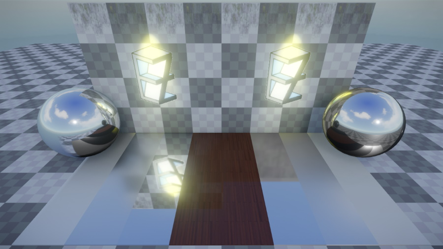
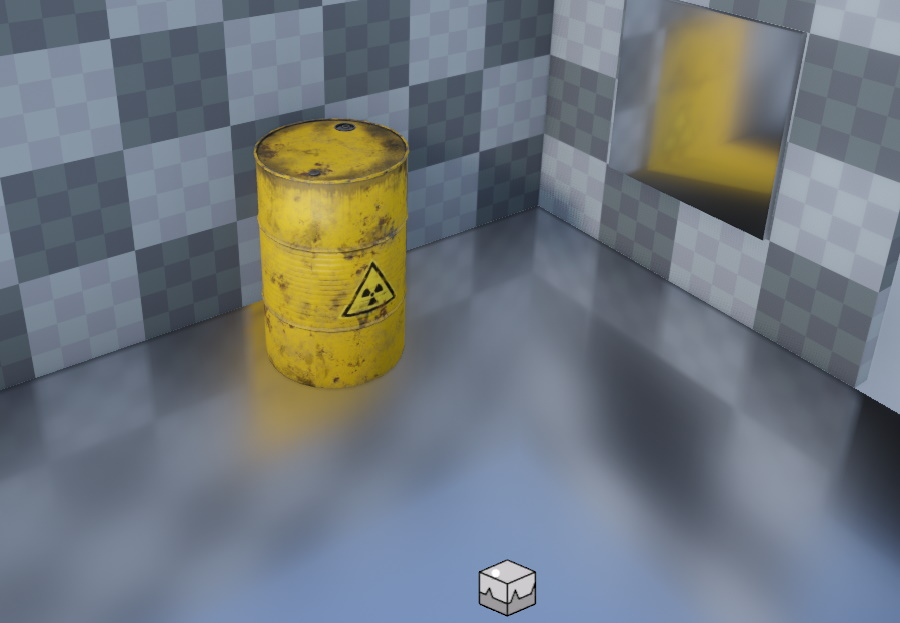
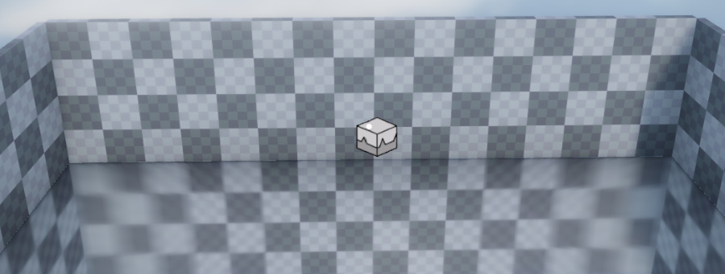
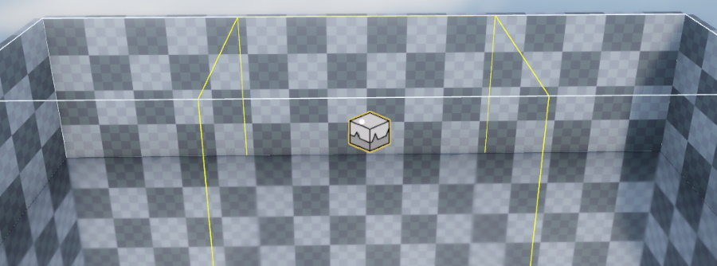
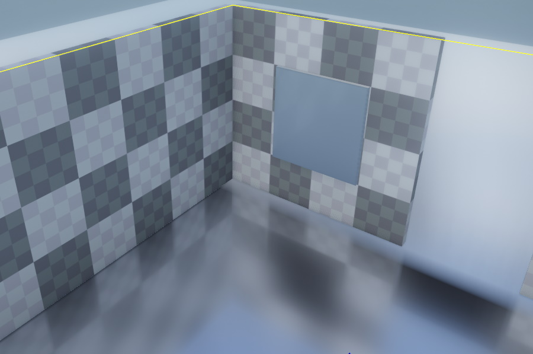
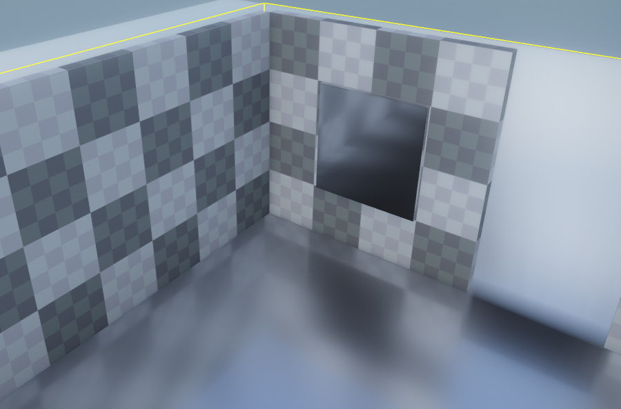

Reflection Probe Components
The two reflection probe components, box reflection probe component and sphere reflection probe component allow for localized reflections to be added to a scene. The probe makes a 360 degree screenshot of the scene to capture the overall lighting at this location into a cubemap which can be sampled at runtime to generate reflections.
Scene Setup
Sphere reflection probes project the captured cubemap to infinity, i.e. no parallax effect is observed when moving. Box reflection probes on the other hand project the cubemap to their extents, allowing for parallax correction of the reflection when moving in the scene. Probes take the parent game object's scale into account. Thus, sphere probes can actually be ellipsoids if scaled non-uniformly. The image below shows the difference between a box (to the left) and a sphere reflection probe (to the right). While the reflection in the metal ball both look convincing, the reflection on the floor is clearly off for the sphere reflection probe.

By default, each probe captures everything in its radius. In many cases it makes sense to tag the ExcludeTags with SkyLight though so that the resulting cubemap is transparent where no geometry was rendered. This allows for the cubemaps to be dynamically composited at runtime. The benefits of this is that the skylight can change dynamically and won't be baked into the probe and it allows for parallax between e.g. a box probe and the sky light fallback reflection.
The captured reflection is only visible in the probe's influence volume. For sphere probes this is limited by their radius and for box probes by their extents.
At runtime, all probes are sorted by their volume and the smallest probe is sampled first. If the reflection is transparent in the cubemap, then next bigger cubemap that influences the geometry is sampled next. This continues until we hit an opaque pixel in a cubemap or if the fallback reflection of the sky light component is reached.
The probe's ReflectionProbeMode by default is set to static, in which case the captured cubemap reflection is only updated once at the start or whenever the settings change. Alternatively it can be set to dynamic, in which case the probe is updated continuously.
Component Properties
Sphere reflection component:
Radius: The influence range of the probe. The reflection is only visible on geometry intersecting this radius.Falloff: Percentage of the radius that is smoothly blended into other probes.SphereProjection: Enables paralax correction to project the reflection onto the shape of the sphere.
Box reflection component:
Extents: The extents of the box projection. The cubemap will be projected to this box.InfluenceScale,InfluenceShift: The influence volume can be smaller than the projected volume (extents) of the probe. This can be useful if you have e.g. a long corridor that you want to place multiple probes in. Each will have the same projection but a different part of the projection volume will be set as the influence volume centred around a probe capture offset.PositiveFalloff,NegativeFalloff: Percentage of the influence volume in each direction that is smoothly blended into other probes. The falloff is defined for each face of the box.BoxProjection: Enables paralax correction to project the reflection onto the shape of the box.
Common properties for both sphere and box reflection probes that describe how the probe is captured:
ReflectionProbeMode:Dynamicmakes the skylight update continuously.Staticwill only update once at the start.IncludeTags,ExcludeTags: These tags define which objects in the scene are used to capture the scene. This is the same mechanism as used in the camera component. By default, theSkyLighttag is excluded to allow for dynamic composition with the sky light component.NearPlane,FarPlane: Camera settings used when the lighting is captured from the scene. IfNearPlaneis set toAuto, a value is computed automatically from theFarPlane.CaptureOffset: The capture offset allows for the capture position of the probe to be decoupled from the game object position.ShowDebugInfo: If enabled, a sphere with a preview of the probe cubemap is rendered at the position of the capture offset. Use this to check whether all desired objects contribute to the probe. Above the sphere will be a stack of other spheres that showcase the reflection with increased roughness.
Best Practices
Don't try to create mirrors with reflection probes
Avoid mirrors or other perfectly reflective surfaces. Reflection probes are approximate and should not be used to emulate mirrors and other perfect reflectors.
Even when using projection, the illusion of a perfect mirror immediately brakes down once objects are in the box-shaped room as the objects will be splatted to the box extends as seen here:

Ensure box projections have roughly the same length on each side
If a box projection has very different dimensions on each axis you will run into stretching artifacts at the long ends of the box as can be seen here:

Instead of just one box probe, use multiple boxes to span long corridors to prevent this. To do this, take the existing box that spans the entire area and do the following:
- Change it's Influence scale to e.g. 0.4 on the long axis, X in this case.
- Duplicate the object at the same positions.
- Set the duplicate's influence shift of the X-axis to 1.
- Duplicate the object in-place again.
- Set the new duplicate's influence shift of the X-axis to -1.
This should result in the following image. The first box is highlighted to show the yellow influence box.

Don't align box probes perfectly with walls
When using BoxProjection, it is best to not try to align a box's extent perfectly with a room. Projections are intended to anchor reflections, not as a mirror substitute.
In the following image you can see some of the pitfalls when trying to do so: While the floor reflection now fits perfectly, there is no reflection on the wall mirror. This is because there is a door to another room and to avoid hard interpolation discontinuties between reflection probes, the falloff in that direction needs to be set. As the falloff moves inwards the mirror on the wall basically gets no contribution of the room's probe anymore. On the left wall this problem can be avoided by setting the falloff to zero but that is generally not an option in most cases.

Instead, increase the extents and set a falloff in each direction to fade into the neighboring reflection probes.

Once the floor material is replaced with a more reasonable one that is not a perfect mirror the missalignment will no longer be aparent while still providing the desired parallax effect to the reflections.